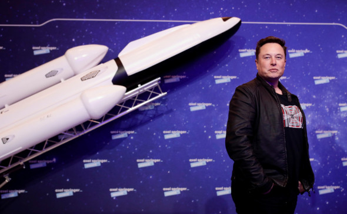

Беспилотная миссия SpaceX отправится на Марс
в течение двух лет, человек впервые может ступить
на
его
поверхность через четыре года

Основатель SpaceX и Tesla Илон Маск считает, что его компания сможет впервые
доставить человека на Марс через
шесть лет. Об этом бизнесмен заявил, выступая на
церемонии вручения премии немецкой медиакомпании
«Аксель-Шпринген».